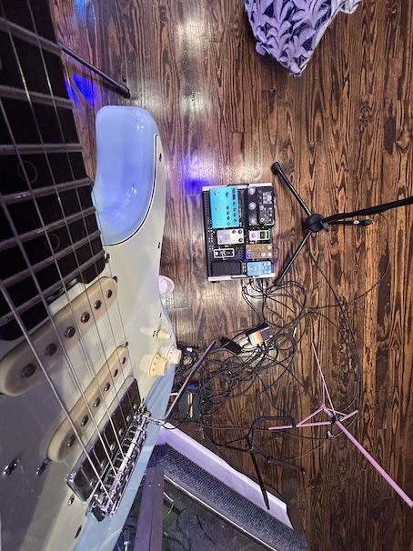
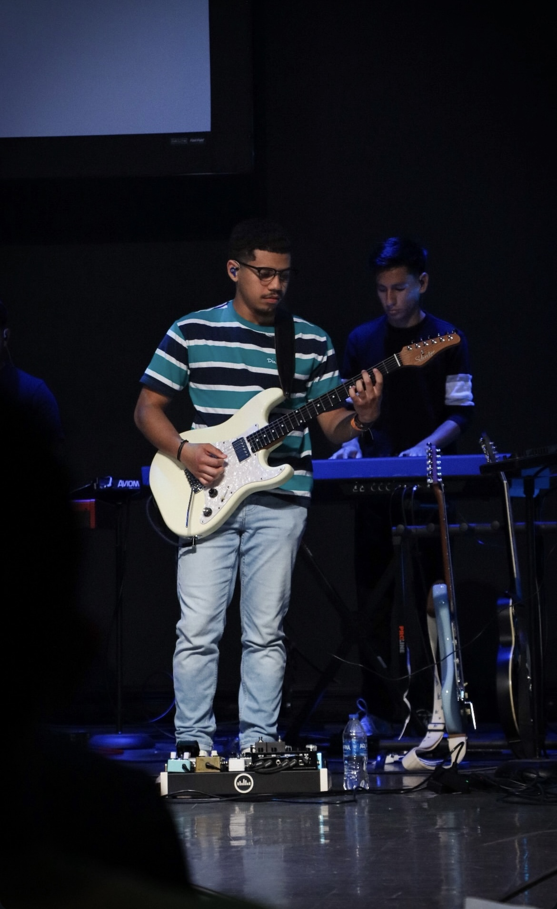
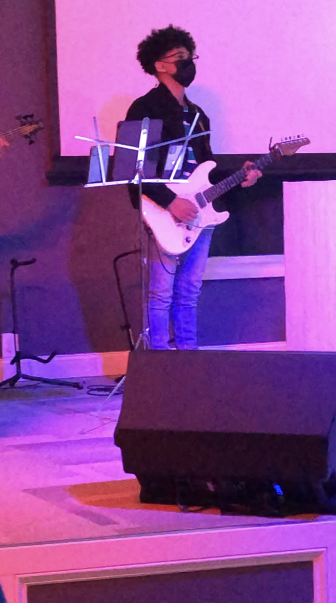
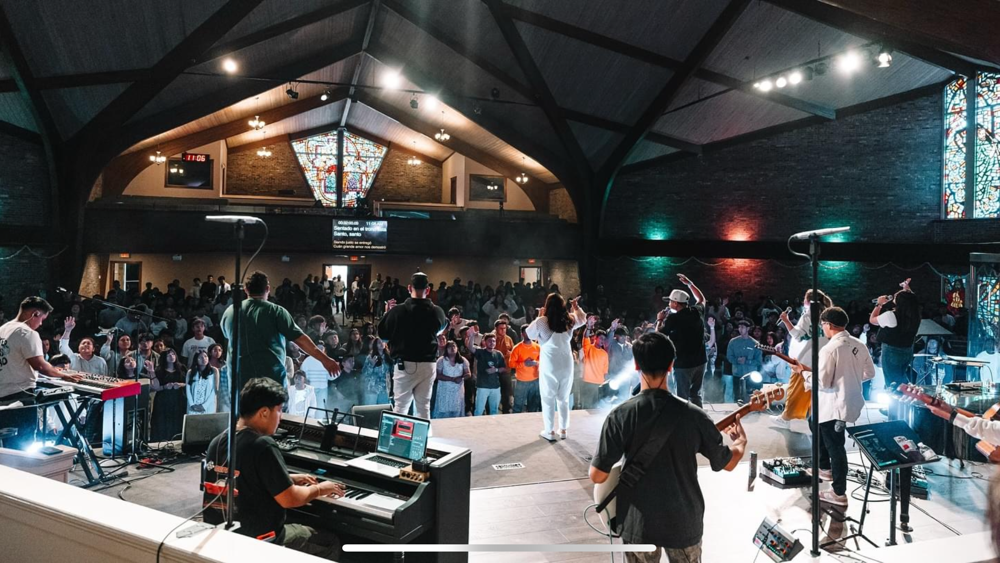
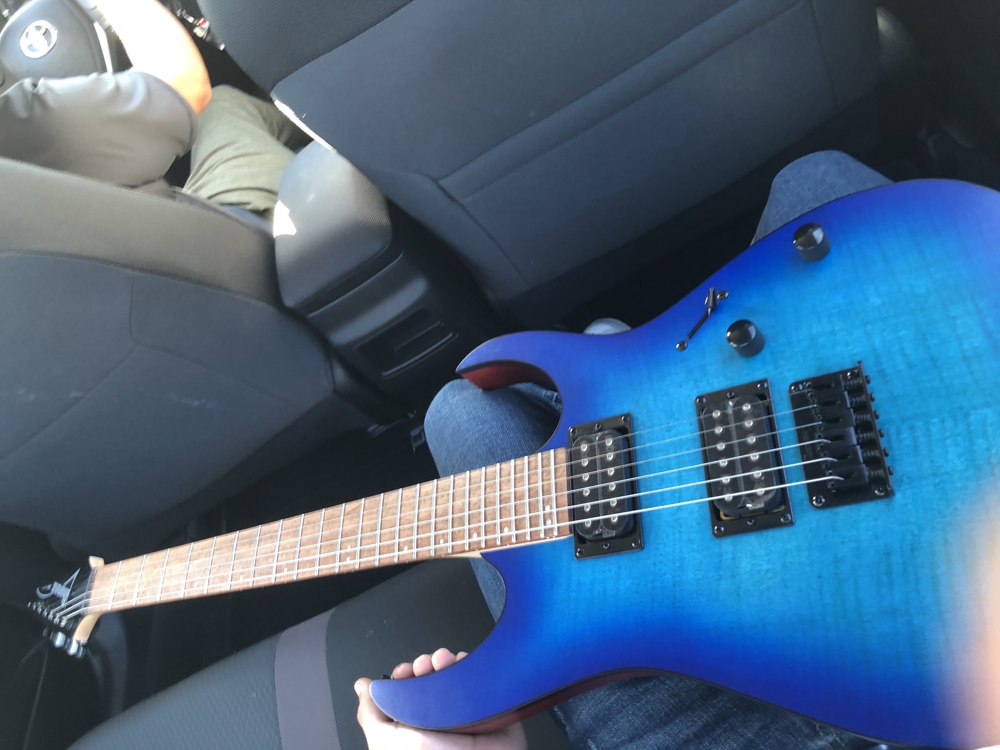

The guitar, specifically the electric guitar, is a six string instrument that picks up the strings vibration through a magnetic pickup, which is then amplified through an amplifier.
The electric guitar is an extremely versatile instrument, especially when paired with effect pedals and amplifiers to create multiple sounds from a single guitar. The electric guitar can be found in most if not all genres of music such as rock, all the way to gospel music.

My Current Guitar Setup
About Me
My name is Christopher Gutierrez, and I am a computer science student at UNCC. When I am not coding, or trying to learn more about software, one of my favorite hobbies is playing guitar. I have been playing guitar for about five and a half years now. While my main instrument is guitar, I also play a couple of other instruments. These incude bass, drums, and piano.
I play guitar at my church and have been playing with my church teams for about 6 years. Since then I have completely fallen in love with music and it has become a part of my day to day life.

Me Playing Guitar at a Church event
Timeline
I started playing guitar near the end of 2019 just for fun, but since I was playing drums at church at the time, I did not take it very seriously. during 2020 is when I started to take it a lot more seriously and started to really fall in love with it. I started by learning the basics like open chords and power chords. Thankfully during that time I was working so I was able to buy a decent beginner guitar and beginner amp.
After learning the basics, I started to learn songs and chord progressions. After learning solos, I fell in love even more, this is when I made the most progress in my journey in playing guitar and I realized that I wanted to take it more seriously.

Playing at my First Event in 2021
Locations
In 2021, I played at the first live event that was outside of my church. I loved being able to travel to different cities and play the instrument I love. I got this opportunity again in 2022 and since then have played in various different cities. These include Hendorsonville, NC, Charlotte, NC, Belmont, NC, Greensbro, NC, Black Mountain, NC, and Buford, GA.
The best part of being able to play out of town is meeting new musicians and making meaningful connections. Every time I get to play with new musicians, I learn so much about music and it always makes me a better musician. While making the trips and hauling all of my gear can get stressful, it is always worth it for me and they are always trips that I will never forget.

Buford, GA (I am in a white shirt, second from right)
How Did I Learn?
When I first picked up a guitar, I had no idea how to do anything with it. I first started learning by watching beginner tutorials on youtube that helped me understand the absolute basics like each part of the guitar and a couple of open chords. After I got a grasp of the basics of the guitar, I started to learn different songs, still using YouTube to look up different song tutorials.
After a while, I got stuck in what guitarists call "the rut". This means that I just had no idea where else to go, what to learn, and while I had made a lot of progress since my starting days, I felt stuck. I then decided to invest in one on one lessons with a teacher and this is one of the best decisions I have made. I started to see a lot of progress and learned about a lot of things that I do not believe I could have learned without my teacher.
After the time that I spent with a teacher, the guitar really 'opened' up for me. This allowed me to be able to explore different things and since then, I have learned alot by just sitting down and trying different things up and down the neck.

Going Home With my First Guitar
Why Guitar?
Guitar is my favorite instrument because being able to create music with my hands is an awesome feeling that I never get tired of. Unlike the piano, being able to do things like rake the strings, bend the strings, vibrato, harmonics, etc. just add so much more feel and make the instrument feel more personal to me. Feeling the strings vibrate along with the pitch of the song is an unexplainable feeling.
Apart from just playing guitar in my room, I love to play live. Playing live is just a whole different world than just sitting in a room by yourself. The added pressure of knowing you don't have a redo, the flow of making up different parts on the spot, the nerves, and the physical vibrations you can feel from the drums on the stage all make for such a unique and unforgettable experience that I wish everyone could experience. These are a few reasons why I love to play guitar so much.